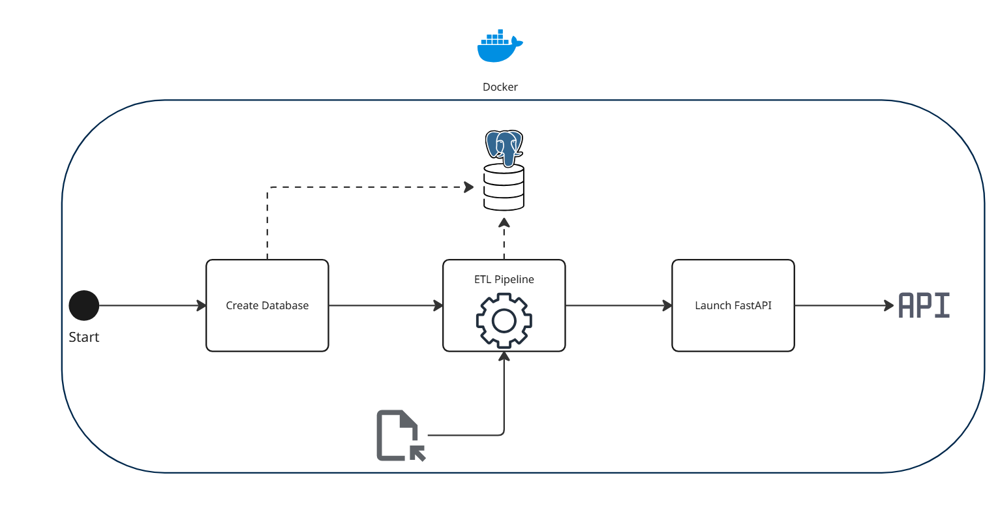

Footprint API — Geospatial ETL & FastAPI Service
Backend Engineering Technical Assessment · Planet Labs
Given a raw CSV of organization usage records — each with a footprint geometry stored as GeoJSON — I designed and built a backend service that sanitizes that data, loads it into PostgreSQL, and serves it through a FastAPI layer ready to drive a heatmap frontend. The full stack — database, ETL job, API, and test suite — runs from a single Docker Compose command, with a written design doc covering the ETL design, API/database architecture, complex-geometry handling, an authentication proposal, and a CI/CD pipeline plan.
Key Accomplishments
🛠️ ETL Pipeline
- Built an Extract–Transform–Load pipeline that parses GeoJSON footprint strings into Shapely geometries, drops and logs invalid geometries (e.g. entries missing a required GeoJSON "type" member) instead of failing the whole batch, and loads the result into PostgreSQL as a GeoDataFrame converted to WKT
- Ran the pipeline as its own Docker Compose service ahead of the API container, keeping data processing failures isolated from API logs and avoiding repeat ETL runs by checking for an existing table before reprocessing
- Documented an approach for handling Planet-scale complex geometries — geometry simplification and validity checks via Shapely's
simplify()andis_valid— to keep large, high-vertex footprints from degrading downstream rendering
⚙️ API & Database Design
- Exposed two endpoints — listing all organization IDs and fetching geometry data for a given org (or all orgs via a wildcard) — behind a FastAPI layer with Pydantic validation and automatic OpenAPI docs
- Introduced a
Databaseclass as the sole point of contact with PostgreSQL, decoupling query logic from route handlers so new data sources or operations can be added without touching the API layer - Wrote a design doc proposing JWT/OAuth2-based authentication with tiered access (public, user, admin) for future hardening of the API
✅ Testing & Delivery
- Containerized the database, ETL job, API, and a dedicated test runner in Docker Compose so the entire stack — including the test suite — starts with one command
- Drove the test suite to 97% code coverage with Pytest and held a 9.81/10 pylint score across the codebase
- Authored a full design document and proposed CI/CD pipeline (lint → security scan → unit/integration tests → staged deploy → release → docs) for taking the service from take-home assessment to production
Architecture

Back
Get In Touch
If you have any questions or want to get in touch, please feel free to contact me!